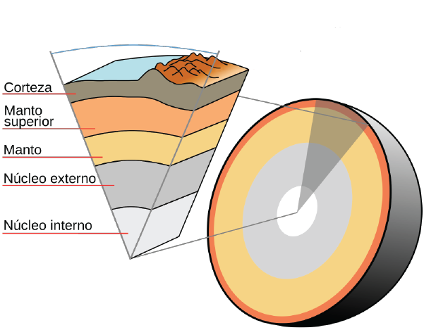
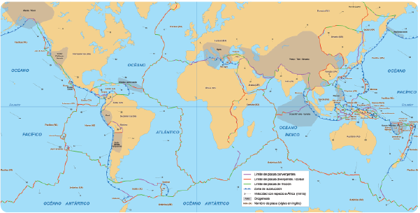

Sesión 2
Inicio
Comenta con tu grupo la siguiente pregunta:
¿Qué fenómenos geológicos conoces que son causantes de desastres?
Desarrollo
Junto con tu grupo, realiza la siguiente lectura por turnos.
Los sismos como fenómenos geológicos causantes de desastres
Se define como fenómeno geológico al agente perturbador que tiene como causa directa las acciones y movimientos de la corteza terrestre y que corresponde a los sismos, las erupciones volcánicas, los tsunamis, la inestabilidad de laderas, los flujos, los caídos o derrumbes, los hundimientos, la subsidencia y los agrietamientos.
Definiremos brevemente a los sismos relacionándolos con los fenómenos físicos que los acompañan y la forma en que el conocimiento científico permite la aplicación tecnológica en la mitigación de sus efectos en poblaciones que potencialmente podrían resultar afectadas.
Muchos de los fenómenos geológicos originan cambios permanentes que ocurren en las capas interiores de nuestro planeta (el núcleo, el manto y la corteza) que resultan de la gran cantidad de calor que se produce constantemente en el núcleo que se libera hacia la corteza por fenómenos de convección, pues estas capas presentan fases líquidas.

Capas de la Tierra
La parte superior de la corteza llamada litósfera está organizada en placas tectónicas, que son piezas de forma irregular, a modo de rompecabezas, donde los límites entre ellas presentan, en un lugar llamado foco o epicentro, roces, choques o cualquier otra posibilidad de movimientos que causan vibraciones o movimientos de corta duración y de intensidad variable que se manifestarán a nivel superficial como sismos.

Las placas tectónicas se acomodan constantemente
Se define como sismo al temblor de tierra que no causa daños humanos y materiales de importancia; pero será terremoto cuando se presenta un temblor de gran intensidad, que causa lo que hemos llamado un desastre.
Los sismos, por su efecto ondulatorio, viajan a grandes velocidades hacia el interior de cada placa, que serán perceptibles a cientos de kilómetros de la zona donde se originaron y en ocasiones con mayor intensidad por el fenómeno de resonancia. Los sismos tienen diferentes presentaciones cuando los tipos de suelos son distintos, de tal manera que los estudios de ingeniería para la construcción deben respetar las normas o reglamentos sísmicos de cada país o región para evitar que se presente el fenómeno de resonancia en las construcciones. Con el siguiente estudio experimental podremos apreciar el fenómeno de resonancia que incluye la conjugación de las variables frecuencia y altura de la estructura en que los periodos de vibración de la estructura y del suelo que lo sostiene coinciden.
Observa atentamente el siguiente video.
Lee con atención la información que se te presenta.
Nuestro país se encuentra en una región que tiene efectos muy cercanos a encuentros de placas tectónicas, por tal motivo es muy importante que la población tenga la capacidad de reducir los impactos de un sismo en cuanto a:
- Que las construcciones de casas, cualquier tipo de edificios o construcciones viales consideren el mapa sísmico de cada región.
- Que las personas tengan en claro que estos eventos no son predecibles y por lo tanto es necesario realizar ensayos de posible ocurrencia; tomar con seriedad los simulacros que se organicen en la escuela o trabajo y que cada familia realice el suyo.
- Es necesario tener un plan de acción familiar, escolar y laboral sobre lo que se debe hacer antes, durante y después de un sismo.
- Seguir las instrucciones de las autoridades de protección civil locales y federales.
¿Qué hacer en caso de un sismo?
Las autoridades de zonas con alta sismicidad tienen programas de difusión de información para la población civil.
Cierre
En silencio y de forma individual, realiza la siguiente lectura.
Otros fenómenos geológicos
Con base en lo visto dentro de la lectura, realiza la siguiente actividad.